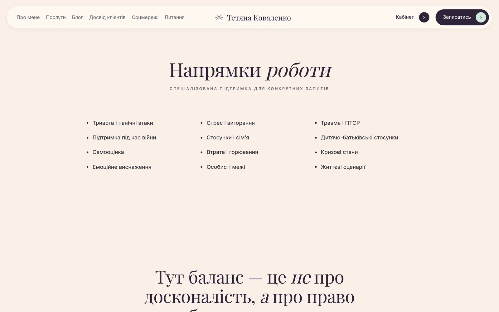
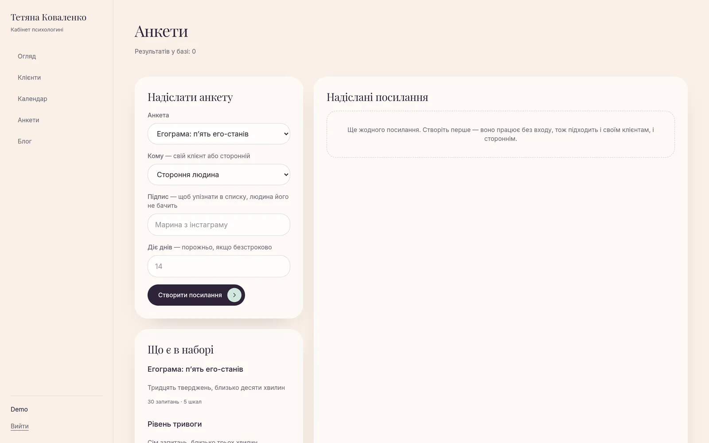

Картотека клієнтів
Картка із запитом, цілями й контекстом, стрічка нотаток трьох типів — підсумок зустрічі, спостереження, гіпотеза, — план на наступну сесію з галочками і червоний блок «Важливо пам’ятати» про ліки й ризики над усім іншим.
Сайт практикуючої психологині разом із робочим кабінетом: публічні сторінки й блог для нових клієнтів, особистий кабінет із домашніми завданнями й анкетами — і закрита картотека, з якої в кабінет клієнта не потрапляє нічого. Next.js, PostgreSQL, розгортання на Fly.io.
Практика психолога тримається на трьох речах, які зазвичай живуть у різних місцях: сайт, куди приходять нові клієнти, записи про кожного клієнта й зв’язок між зустрічами. Тут це один застосунок із трьома рівнями доступу — гість, клієнт і психологиня.
Найчутливіша частина — картотека: запит, контекст, нотатки до зустрічей, гіпотези й результати анкет. Звідси головне правило архітектури: усе, що бачить психологиня, не потрапляє в кабінет клієнта. Доступ перевіряється на сервері в кожному маршруті, а не ховається в інтерфейсі.
Анкети надсилаються одноразовим посиланням із терміном дії. Його можна відкрити без входу, тож воно годиться й для людей з інстаграму, яких ще немає в базі. Відповідач бачить лише подяку й назву найпомітнішої шкали — бали й тлумачення лишаються для розбору на сесії.
Картка із запитом, цілями й контекстом, стрічка нотаток трьох типів — підсумок зустрічі, спостереження, гіпотеза, — план на наступну сесію з галочками і червоний блок «Важливо пам’ятати» про ліки й ризики над усім іншим.
П’ять опитувальників із підрахунком за шкалами. Посилання проходить статуси «надіслано → відкрито → заповнено»; прострочене не відкривається, заповнене не приймає відповідей удруге.
За результатами анкети модель пише резюме для психологині. Ім’я, пошта й телефон замінюються на позначки ще до формування запиту, тож персональні дані за межі сервера не виходять.
Зустрічі записуються в кабінеті, а зайнятість підтягується з Google Calendar — щоб сесії не накладалися на решту життя.
Домашні завдання з файлами й анкети, надіслані саме цій людині. Вхід поштою з паролем або через Google.
Дописи й чернетки, адреса сторінки генерується із заголовка. Межу серверних дій Next піднято до 12 МБ свідомо: фото з телефона більше за типовий 1 МБ, і без цього обкладинка просто не завантажилася б.
Next.js з App Router: публічні сторінки рендеряться на сервері, форми кабінету — серверними діями. Схему бази описує Prisma, а всі вхідні дані проходять через Zod ще до звернення до бази.
Розгортання — Docker на Fly.io з окремим диском для завантажених файлів. Міграції йдуть повз пулер з’єднань: Prisma бере advisory-блокування, а через pgbouncer у transaction-режимі воно не працює й деплой падає.
app/ маршрути Next.js
page.tsx публічний сайт
blog/ блог
t/[token]/ анкета за одноразовим посиланням, без входу
client/ кабінет клієнта: анкети, домашні завдання
admin/ кабінет психологині
clients/ картотека
tests/ анкети й облік посилань
calendar/ зустрічі + Google Calendar
blog/ редактор дописів
lib/
auth-guard.ts перевірка ролі на сервері
tests.ts опитувальники та шкали
test-scoring.ts підрахунок і тлумачення
ai.ts клінічне резюме, маскування персональних даних
google.ts Google Calendar
storage.ts файли на диску Fly
prisma/ 13 моделей і міграції
docs/ інструкції для психологині
Натисніть на зображення, щоб відкрити його на весь екран. Стрілки ← → гортають галерею.


